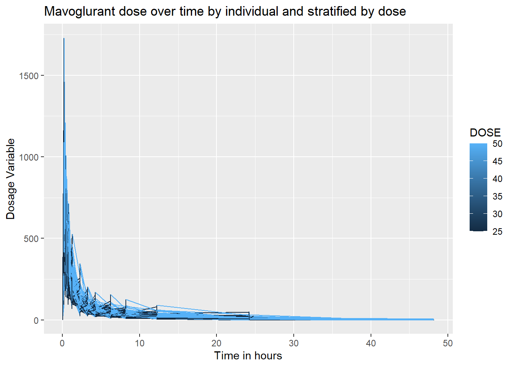
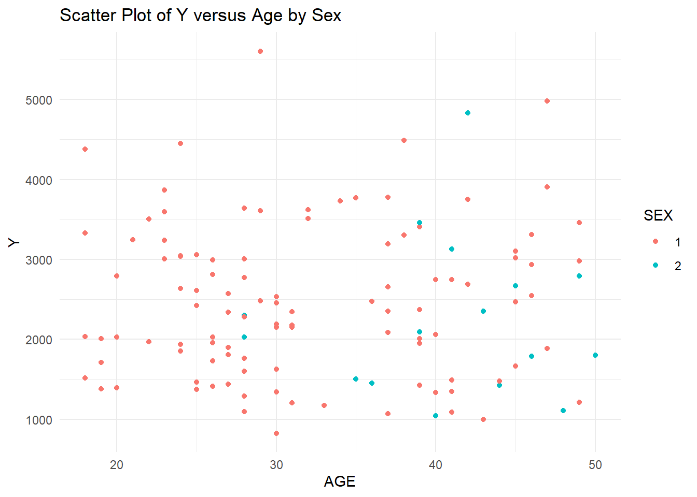
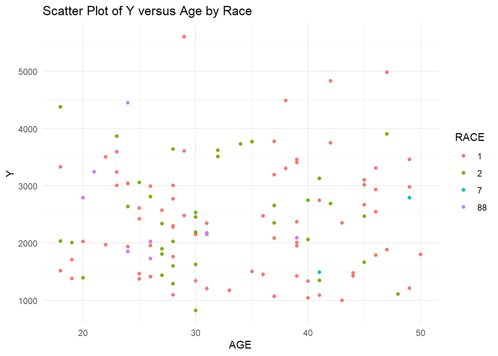
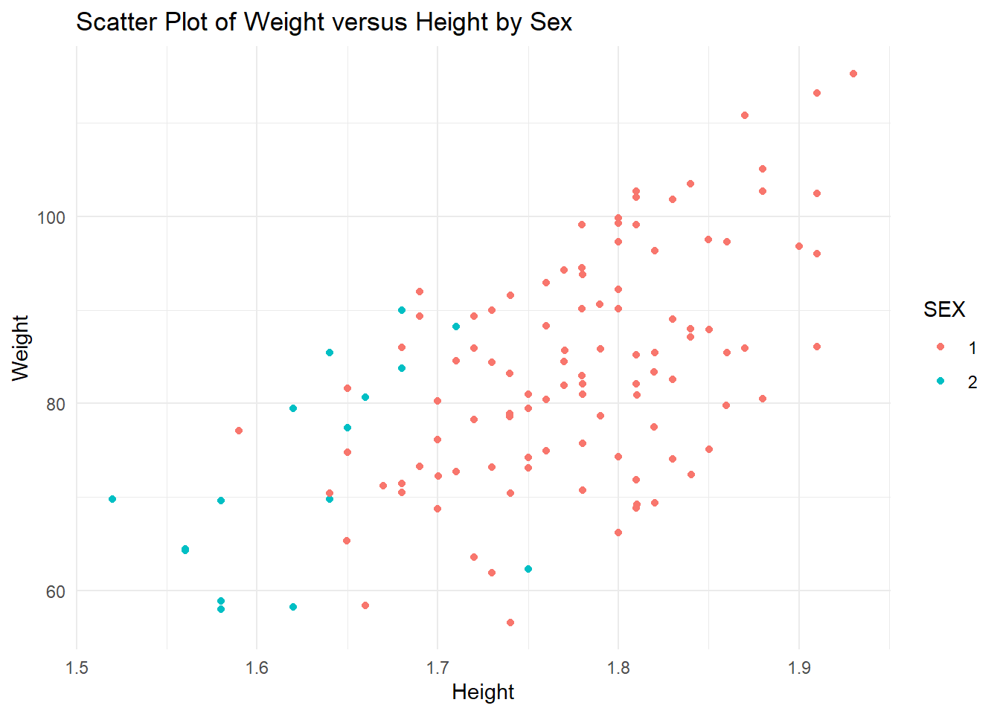
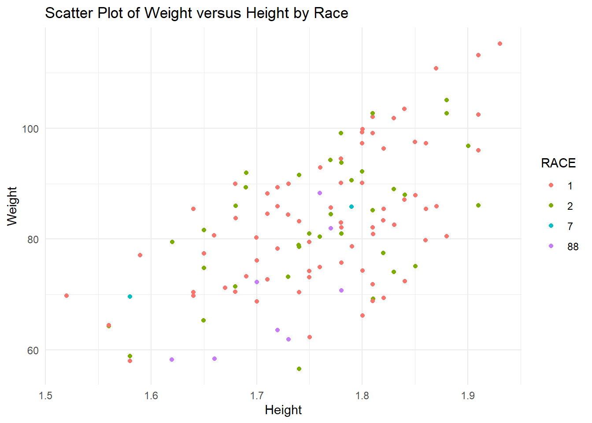
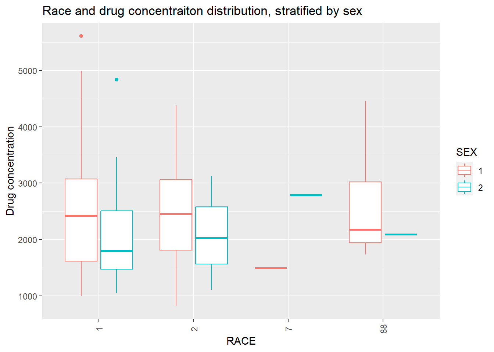
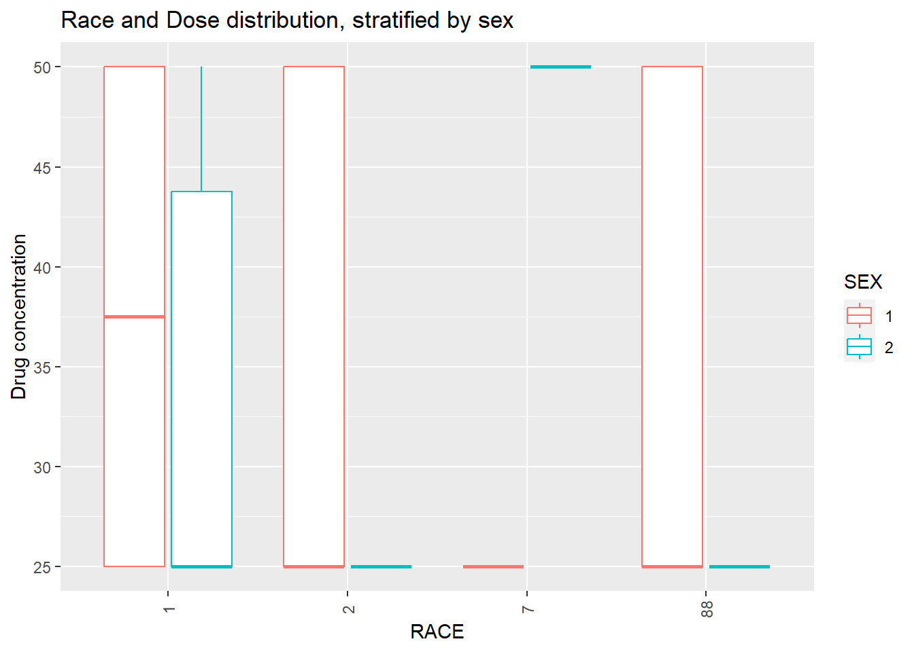

── Conflicts ────────────────────────────────────────── tidyverse_conflicts() ──
✖ psych::%+%() masks ggplot2::%+%()
✖ psych::alpha() masks ggplot2::alpha(), scales::alpha()
✖ readr::col_factor() masks scales::col_factor()
✖ purrr::discard() masks scales::discard()
✖ dplyr::filter() masks stats::filter()
✖ stringr::fixed() masks recipes::fixed()
✖ dplyr::lag() masks stats::lag()
✖ readr::spec() masks yardstick::spec()
ℹ Use the conflicted package (<http://conflicted.r-lib.org/>) to force all conflicts to become errors
library(corrplot) # creating correlation plots
corrplot 0.92 loaded
Next, I will read the csv file to import the Mavoglurant data into R.
trial_data <-read_csv(here("fitting-exercise", "Mavoglurant_A2121_nmpk.csv"), show_col_types =FALSE) # read csv in the relative path to the fitting exercise folder, without showing column typesstr(trial_data) # examine structure of data in the trial_data frame
I want to create a line plot showing a dosage over time for each individual in the data set, that is stratified by total dose amount.
ggplot(trial_data, aes(x = TIME, y = DV, group = ID, color = DOSE)) +geom_line() +labs(title ="Mavoglurant dose over time by individual and stratified by dose", y="Dosage Variable", x ="Time in hours")

Because the value of 2 for OCC (or occasion) reflects 2 dosages, and we are only examining cases that are given 1 dose, we will drop all levels= ‘2’ of the factor variable, OCC.
trial_data <-droplevels(trial_data[!trial_data$OCC =='2',]) # drop rows where the level value is '2'str(trial_data) # examine dataframe structure
levels(trial_data$OCC) # examine levels of the OCC variable
[1] "1"
All factor levels of OCC except for ‘1’, were dropped. Next, we will drop all rows with the numeric value for TIME = ‘0’
trial_data2 <-trial_data[!(trial_data$TIME %in%0),] # exclude all rows where time has a value fo zerosummary(trial_data2$TIME) # check the minimum avlue for TIME
Min. 1st Qu. Median Mean 3rd Qu. Max.
0.200 0.583 3.200 6.930 8.250 48.217
Now we will use dplyr to find the sum of dosage values (DV) for each individual (ID).
sum_DV <- trial_data2 %>%# create data frame for the sum_DVgroup_by(ID) %>%# group by individual summarise( Y =sum(DV)) # make a summary column of DV using dpylrstr(sum_DV) # check structure of sumDV
trial_data4 <-merge(x = trial_data3, y = sum_DV, by ="ID", all =TRUE) # outer join the data frame to preserve all rows and join them by the ID variablestr(trial_data4) # check structure of joined df
Because I have already converted the variables, SEX and RACE, to factors, I will not repeat this step. I will delete the unnecessary columns of my final data frame to only include the variables: Y, DOSE, AGE, SEX, RACE, WT, and HT.
trial_data4 <- trial_data4 %>%select("Y", "DOSE", "AGE", "SEX", "RACE", "WT", "HT") # select only the aforementioned variablesstr(trial_data4) # check data structure
Y DOSE AGE SEX RACE
Min. : 826.4 Min. :25.00 Min. :18.00 1:104 1 :74
1st Qu.:1700.5 1st Qu.:25.00 1st Qu.:26.00 2: 16 2 :36
Median :2349.1 Median :37.50 Median :31.00 7 : 2
Mean :2445.4 Mean :36.46 Mean :33.00 88: 8
3rd Qu.:3050.2 3rd Qu.:50.00 3rd Qu.:40.25
Max. :5606.6 Max. :50.00 Max. :50.00
WT HT
Min. : 56.60 Min. :1.520
1st Qu.: 73.17 1st Qu.:1.700
Median : 82.10 Median :1.770
Mean : 82.55 Mean :1.759
3rd Qu.: 90.10 3rd Qu.:1.813
Max. :115.30 Max. :1.930
I will now check for any missing values.
which(is.na(trial_data4)) # find location of missing values
integer(0)
sum(is.na(trial_data4)) # count total missing values
[1] 0
No missing variables will found, so I will not continue to clean the data and move onto exploratory data analysis. ## Exploratory Data Analysis ### Summary Table I will create a summary table of the data frame in R by using the describe() function from the “psych” package.
table1 <-describe(trial_data4[ , c("Y", "DOSE", "AGE","WT", "HT")],fast=TRUE) # summary stats of cleaned data for the numeric columnsprint(table1)
vars n mean sd min max range se
Y 1 120 2445.41 961.64 826.43 5606.58 4780.15 87.78
DOSE 2 120 36.46 11.86 25.00 50.00 25.00 1.08
AGE 3 120 33.00 8.98 18.00 50.00 32.00 0.82
WT 4 120 82.55 12.52 56.60 115.30 58.70 1.14
HT 5 120 1.76 0.09 1.52 1.93 0.41 0.01
In this summary table, we see the numeric variables. They all have a relatively small SE and reasonable min and max values. The range sumDV (Y) is large, but this is likely because this is the sum of the concentration administered to each individual. Now I will bring in the factor variables. I want to stratify the Y variable and dose by AGE, RACE, AGE, WT and HT. I will be using the tidyverse and gtsummary (which I found on stackoverflow) packages to produce this table.
`summarise()` has grouped output by 'SEX'. You can override using the `.groups`
argument.
print(table2)
# A tibble: 8 × 8
# Groups: SEX [2]
SEX RACE mean_Y mean_DOSE mean_AGE sd_Y sd_DOSE sd_AGE
<fct> <fct> <dbl> <dbl> <dbl> <dbl> <dbl> <dbl>
1 1 1 2468. 38.1 32.9 995. 11.8 9.14
2 1 2 2497. 35.6 31.0 910. 12.2 7.91
3 1 7 1491. 25 41 NA NA NA
4 1 88 2612. 35.7 24.6 974. 13.4 3.64
5 2 1 2239. 34.1 40.7 1099. 11.3 6.08
6 2 2 2087. 25 39 1010. 0 10.1
7 2 7 2790. 50 49 NA NA NA
8 2 88 2093. 25 39 NA NA NA
The means of Y and dosage seam to be similar, and within the range specified above with a couple exceptions. SEX(1) and RACE(7) has a lower mean Y. There is also a high DOSE value for SEX(2) RACE(7). This value of 50 is the max, so either all of the values here must be 50. The mean age for race and sex also varies quite a bit. It is also strange the sd for dose for SEX(2) RACE(2) is 0. ### Data Distribution #### Scatter Plots To examine these strange summary stats in the table in more detail, we will visualize the data distribution using ggplot2. First, I will produce some scatterplots to see if there are any associations or if the data is randomly distributed
# Y versus AGE scatter plot by SEXplot1 <-ggplot(trial_data4, aes(x = AGE, y = Y, color = SEX)) +geom_point() +labs(x ="AGE", y ="Y", title ="Scatter Plot of Y versus Age by Sex") +theme_minimal()print(plot1)

# Y versus AGE scatter plot by RACEplot2 <-ggplot(trial_data4, aes(x = AGE, y = Y, color = RACE)) +geom_point() +labs(x ="AGE", y ="Y", title ="Scatter Plot of Y versus Age by Race") +theme_minimal()print(plot2)

# WT versus HT scatter plot by Sexplot3 <-ggplot(trial_data4, aes(x = HT, y = WT, color = SEX)) +geom_point() +labs(x ="Height", y ="Weight", title ="Scatter Plot of Weight versus Height by Sex") +theme_minimal()print(plot3)

# WT versus HT scatter plot by Raceplot4 <-ggplot(trial_data4, aes(x = HT, y = WT, color = RACE)) +geom_point() +labs(x ="Height", y ="Weight", title ="Scatter Plot of Weight versus Height by Race") +theme_minimal()print(plot4)

The distribution of age seems and Y seem to be fairly random, with the exception of an outlier in the Y variable that is extremely high. I will leave this outlier as there is no indication of whether this holds importance (we don’t know the definition of many of these variables). The distribution of Sex for Y and Age values seems to be a higher age for sex 2, but random for the Y variable. In general, Race seems fairly random for Age and Y, except Race 7 seems to also predominantly be higher ages. Weight and height show a slight trend, as they normally do, without any extreme outliers. The sex distribution of height and weight also makes sense as females tend to be shorter and weight less than males. For this reason, we might assume that sex 2 is female, but we should not make assumptions. Races 1, 2, and 7 seem to be randomly distributed for weight and height. However, race 88 seems to be on the lower end for both height and weight, which may indicate some sex correlation with race. #### Box Plots Now I will use box plots to examine the distribution of Dose and Y stratified by the two factor variables, Race and Sex.
# Distribution of Y stratified by SEX and RACEplot6 <- trial_data4 %>%ggplot(aes(x=RACE, y=Y, color = SEX)) +geom_boxplot() +labs(x ="RACE", y ="Drug concentration", title ="Race and drug concentraiton distribution, stratified by sex") +theme(axis.text.x =element_text(angle =90, vjust =0.5)) # Rotate x-axis text by 90 degreesplot(plot6)

# Distribution of DOSE stratified by SEX and RACEplot7 <- trial_data4 %>%ggplot(aes(x=RACE, y=DOSE, color = SEX)) +geom_boxplot() +labs(x ="RACE", y ="Drug concentration", title ="Race and Dose distribution, stratified by sex") +theme(axis.text.x =element_text(angle =90, vjust =0.5)) # Rotate x-axis text by 90 degreesplot(plot7)

There are two outliers for Y, in race 1. Each outlier is of a different sex, so sex might not impact the outliers.There are only 2 values for race 7, making their distribution look wonky. In general, sex 1 has a higher Y and dose than sex 2. No outliers is dose were seen as there are only 3 options for dose. Again, because there are two values in race 7, the distribution is wonky. I will choose to keep Race 7, because I do not know if this represents an important minority group, despite there only being 2 values. ### Correlation Plots Now I will create a correlation plot of the numeric variables. To do this, I asked ChatGPT to provide me with the functions used to make correlation plots for numeric variables.
From the correlation plot, it seems that weight and height, and Y and Dose are most highly correlated. Age and height are moderately negatively correlated, as well as weight and Y are slightly negatively correlated. ## Model Fitting First, I will fit a linear model to the outcome, Y, using the predictor of DOSE.
set.seed(333)data_split <- trial_data4 %>%initial_split(prop =3/4) #split the data so that 3/4 is in the training set and 1/4 in the reference settrain_data <-training(data_split) # make the training data objecttest_data <-testing(data_split) # make testing data objecttrial_linear_fit_1 <-recipe(Y ~ DOSE, data = train_data) lm_mod <-linear_reg() %>%# make object called lm_mod for linear_regression functionset_engine("lm") %>%# set linear regression engine to lmset_mode("regression") # set to regression modetrials_workflow1 <-workflow() %>%#create a workflowadd_model(lm_mod) %>%#apply the linear regression modeladd_recipe(trial_linear_fit_1) #then, apply the recipelm_fit <- lm_mod %>%fit(Y ~ DOSE, data = trial_data4) # fit Y to dose tidy(lm_fit) # produce tibble for linear regression fit
The intercept has a relatively large standard error, while the DOSE regression estimate has a more reasonable SE. This linear regression reflects a positive trend between dose and Y with a slope of 58.2. I will now use this model to predict the trial data. This will allow me to calculate the predictive power using the RMSE and R-squared metrics.
trial_fit1 <- trials_workflow1 %>%fit(data = train_data) # shows model to fit the data sued from training from the aforementioned workflowpredict(trial_fit1, test_data) #predict the outcome Y
eval_metrics <-metric_set(rmse, rsq) # use yardstick to select multiple regression metrics (rmse and r squared)eval_metrics(data = trial_aug,truth = Y,estimate = .pred) %>%select(-2) # Evaluate RMSE, R2 based on the results
The RMSE is very large and rsq is close to 0.5 which shows that the predictive model is not a very good fit for the data. Next, I will fit a linear model to the outcome, Y, using all of the predictors.
trial_linear_fit_2 <-recipe(Y ~ ., data = train_data) lm_mod2 <-linear_reg() %>%# make object called lm_mod for linear_regression functionset_engine("lm") %>%# set linear regression engine to lmset_mode("regression") # set to regression modetrials_workflow2 <-workflow() %>%#create a workflowadd_model(lm_mod2) %>%#apply the linear regression modeladd_recipe(trial_linear_fit_2) #then, apply the recipelm_fit2 <- lm_mod2 %>%fit(Y ~ ., data = trial_data4) # fit Y to dose tidy(lm_fit2) # produce tibble for linear regression fit
The standard error for the intercept, SEX2, RACE2, Race7, and HT are extremely large. This may be in part due to the large standard error of the original Y (outcome) variable. Dose, Age and Race2 have a positive trend with Y while the variables Sex2, Race7, Race88, WT, and HT have a negative trend with Y.
trial_fit2 <- trials_workflow2 %>%fit(data = train_data) # shows model to fit the data sued from training from the aforementioned workflowpredict(trial_fit2, test_data) #predict the outcome Y
eval_metrics <-metric_set(rmse, rsq) # use yardstick to select multiple regression metrics (rmse and r squared)eval_metrics(data = trial_aug,truth = Y,estimate = .pred) %>%select(-2) # Evaluate RMSE, R2 based on the results
The R squared value for the model including all of the predictors is slightly better than the previous model (at around 0.6), but still NOT good. The rmse has not changed much, reflecting a large impact of outliers on the standard error of the predictions in the linear model.
Now we will make a model with SEX to practice fitting with a categorical outcome variable. We will fit a logistic model to the SEX outcome using the predictor, DOSE.
trial_logreg_rec <-recipe(SEX ~ DOSE, data = train_data) %>%# create recipe for logistic regression model using SEX as outcomeprep() # Prepare the recipelr_mod <-logistic_reg() %>%# make object called lr_mod for logistic regression functionset_engine("glm") # set logistic regression engine to glmlr_trials_workflow <-workflow() %>%# create a workflowadd_model(lr_mod) %>%# apply the logistic regression modeladd_recipe(trial_logreg_rec) # then, apply the recipelr_fit <- lr_mod %>%fit(SEX ~ DOSE, data = trial_data4) # fit Y to dose tidy(lr_fit) # produce tibble for log regression fit
There is a relatively high standard error for both the dose and intercept estimates. Both estimates are negative, meaning there is a negative trend between dose and sex.
We will now compute accuracy and ROC-AUC for this model.
The AUC metric for the first predictor is 0.62 and for the second is 0.38. They are both the same magnitude away from 0.5. This means that both predictions are equally as good, but neither prediction is great because it they are not very close to 1 or 0. This means that this model doesn’t have great predictive power either.
Next, we will fit a logistic model to SEX using all of the other predictors.
trial_logreg_rec2 <-recipe(SEX ~ ., data = train_data) %>%# create recipe for logistic regression model using SEX as outcomeprep() # Prepare the recipelr_mod2 <-logistic_reg() %>%# make object called lr_mod for logistic regression functionset_engine("glm") # set logistic regression engine to glmlr_trials_workflow2 <-workflow() %>%# create a workflowadd_model(lr_mod2) %>%# apply the logistic regression modeladd_recipe(trial_logreg_rec2) # then, apply the recipelr_fit2 <- lr_mod2 %>%fit(SEX ~ ., data = trial_data4) # fit Y to dose tidy(lr_fit2) # produce tibble for log regression fit
The intercept now has a much higher estimate, of 60 and a smaller SE than the previous logistic regression model. Almost all of the variables have a negative trends with the Sex variables, except for Race7. In addition, all of the estimates for the predictor variables versus Sex (outcome) have a very high SE, meaning that they have a high variability.
We will also compute accuracy and ROC-AUC for this model.
With a AUC of 0.62 and 0.38, both predictions are equally good, but also both not the greatest. AUC values closer to 0.5 means the model is more near a random model versus an AUC close to 0 or 1, which might show good predictive power.